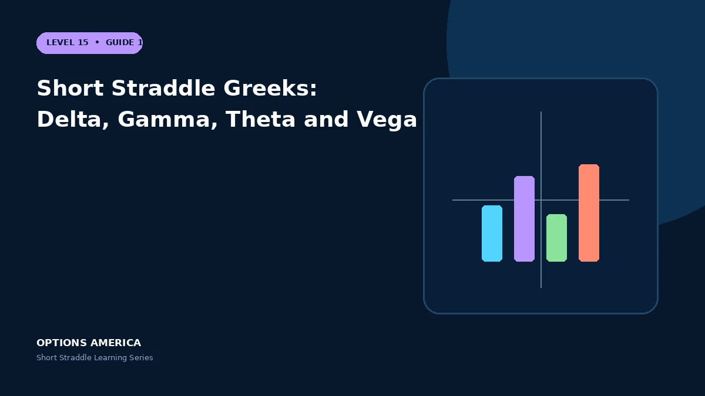

Learn how delta, negative gamma, positive theta and negative vega interact in a short straddle.
Delta
At initiation, call and put deltas may nearly offset. Delta does not stay neutral: a rally makes the position increasingly short delta, while a decline makes it increasingly long delta relative to the falling stock.
Gamma
Negative gamma causes delta to change unfavorably as price moves. The effect becomes stronger near expiration and can make small market moves produce rapid P&L changes.
Theta
Two short options commonly create positive theta. The daily estimate is not guaranteed income and can be overwhelmed by gamma loss or volatility expansion.
Vega
Both short legs normally create negative vega. A volatility rise increases repurchase cost and often occurs at the same time as adverse price movement and wider bid-ask spreads.
A practical example
A straddle begins delta 0.02, gamma −0.06, theta +0.09 and vega −0.24 per share. After a rally, delta can become materially negative because of short gamma.
This simplified scenario focuses on expiration outcomes; live prices and risks will differ. Live option prices also reflect the underlying price, time decay, rates, dividends, liquidity and transaction costs. Greeks are theoretical estimates, not guarantees.
Build a risk-first trading plan
Before using short straddle greeks: delta, gamma, theta and vega, record the underlying price, strike, expiration, total credit and contract multiplier. Calculate both expiration breakevens, then model losses beyond them rather than stopping at the profitable range. The maximum credit is visible at entry, but the largest future loss is not.
Stress at least five underlying prices, a volatility increase and decrease, and several dates. Include a gap that cannot be adjusted intraday. Review delta, gamma, theta and vega at the position and portfolio level because several neutral premium trades can become directional together.
Define a profit target, maximum tolerated loss, margin reserve, event rule and latest exit date. Use a single multi-leg order where possible and verify both legs after every fill or adjustment. This process does not eliminate risk, but it makes the decision measurable and repeatable.
After the trade, record actual movement, volatility change, slippage and the largest directional exposure. Comparing those results with the original forecast helps separate sound execution from a lucky outcome and improves future duration, strike and position-size decisions.
Frequently asked questions
Is delta always zero?
No.
Why is gamma negative?
Both options are sold.
Does positive theta guarantee profit?
No.
Continue the Short Straddle cluster
Explore related guides: Theta and Time Decay in a Short Straddle · When to Close or Roll a Short Straddle · Short Straddle Example With Payoff Scenarios. For a structured sequence, use the free Level 15 – Short Straddle course.
Options involve risk and are not suitable for every investor. This material is educational and is not investment, tax or legal advice. Greeks are theoretical estimates, and contract terms and broker requirements can vary.